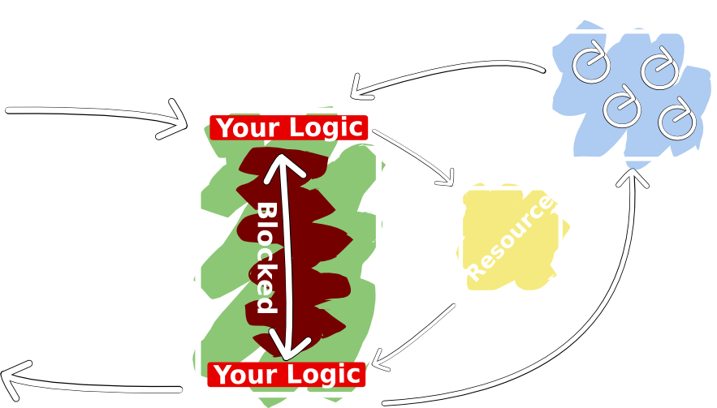
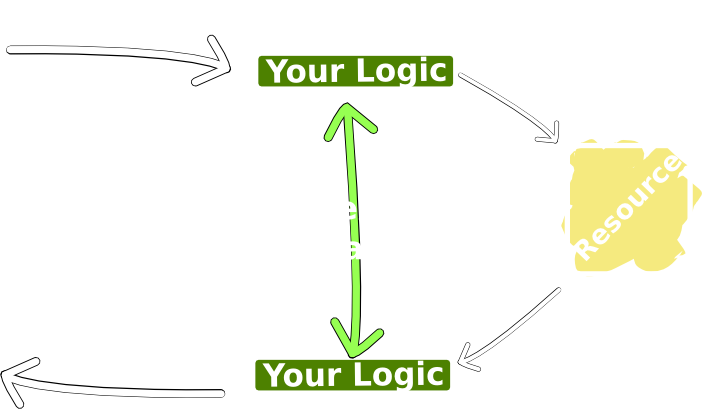
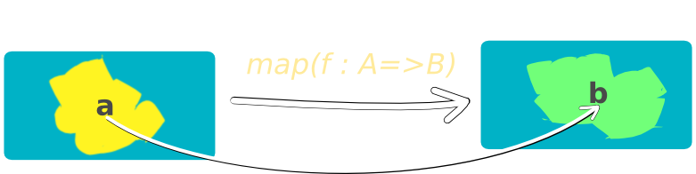
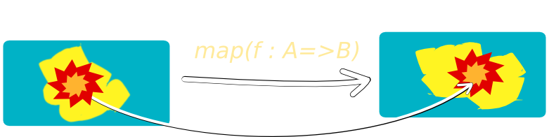
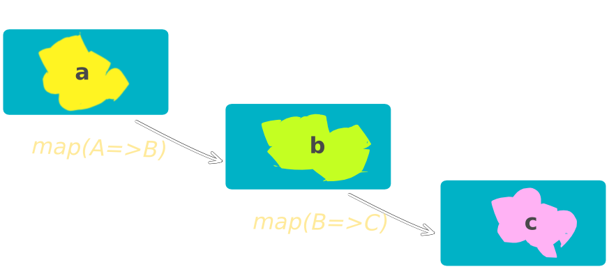
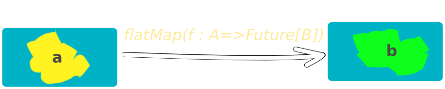
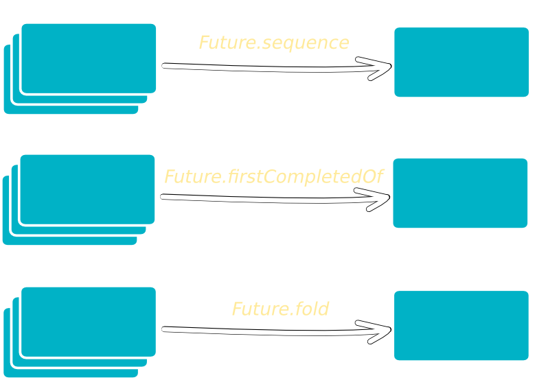

Reactive Programming
is a programming paradigm oriented around data flows and the propagation of change.
Reactive manifesto (here):
- react to EVENT - Event-Driven
- react to LOAD - Scalable
- react to FAILURE - Resilient
- react to USERS - Responsive
Reactive tools:
needs to be reactive from top to bottom
Futures & Promices (Dataflow)
- Write-once / Read-many
- Freely sharable
- Allows non-blocking composition
- Build in model for managing failure
Actors
- Share NOTHING
- Isolated lightweight event-based processes
- Communicates through asynchronous & non-blocking message passing
- Location transparent (distributable)
Agents
- Reactive memory cells
- Send a update function to the Agent
- Reads are “free” (dereferences the Ref)
- Composes easy
Reactive Extensions (Rx)
- Extend Futures with the concept of a Stream
- Composable in a type-safe way
- Event-based & asynchronous
- Observable ⇛ Push Collections
Most modern web frameworks

How would it needed to work
do not call us, we will call you

Functional Reactive Programming (FRP)
as the only true way to overcome ever-changing data
-
Non-reactive:
x = 42
y = x + 1 // x == 42, y == 43
x = x + 1 // x == 43, y == 43
-
Reactive:
x = 42
y = x + 1 // x == 42, y == 43
x = x + 1 // x == 43, y == 44 !!!
-
State and Behavior Are Joined:
f(g(h(x))) // with 'x' changing over time
What we can do:
- Filter
- Merge (composing)
- Zip (combining)
- Throttle
- Map (transforming)
- Memo (buffering)
- ...
Futures & Promises
- "I promise that I will buy you a bicycle when you are old enough to cycling"
"When I (in the future) get a bicycle I will ride a bike to school"
Futures & Promises
transforming the future

Futures & Promises
if the future is not that bright

Futures & Promises
composing (chaining) futures

Futures & Promises
flatting futures

Futures & Promises
sequence futures

When should Futures used:
- For using other services (ws, db, etc)
- For parallel work
- Background work
Home work:
- Actors / Agents
- Iteratee / Reactive Streams
Questions?
Remarks?
Thank you!